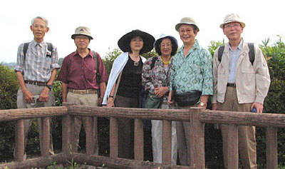

| 見たい項目をクリックして下さい | |||||||||
|
| 行 事 記 録 （詳 細 - １２） |
|
復原古墳めぐり ― さきたま風土記の丘 ―
|
| 掲載日 ０３−１０−７ |
|
行 事 名 |
復原古墳めぐり ―さきたま風土記の丘― |
|
研 究 部 会 |
遺跡見学会 |
|
実 施 日 |
０３年９月１０日（水） |
|
実 施 場 所 |
埼玉県行田市大字埼玉 県立さきたま資料館他古墳9基 |
|
参 加 者 |
会員６名 （尾田、小林、柴田、清水、坪井、西田） |
| 記 録 | 尾田 彰男 |
|
概 要 |
国指定遺跡の「さきたま古墳群」は県名発祥の地、行田市埼玉にあり、5世紀終わりから７世紀初め頃までに築造された９基の大型古墳群が、互いに周濠が接して群集している全国的にも珍しい形態の古墳群である。東西５００メートル、南北１キロメートルに及ぶ全域が県の「さきたま風土記の丘」公園として整備されていて、大変楽しい古墳巡りの1日であった。
|
| イラストマップ さきたま風土記の丘 （埼玉県立さきたま資料館ガイドブックにより） |
|
国指定遺跡の「さきたま古墳群」は県名発祥の地、行田市埼玉にあり、5世紀終わりから７世紀初め頃までに築造された９基の大型古墳群が、互いに周濠が接して群集している全国的にも珍しい形態の古墳群である。東西５００メートル、南北１キロメートルに及ぶ全域が県の「さきたま風土記の丘」公園として整備され、四季折々に多くの見学者が訪れている。
|
||||||||
| さきたま風土記の丘 | ||||||||
| 県立さきたま資料館 | ||||||||
| なんと言っても、圧巻は稲荷山古墳出土の「金錯銘鉄剣（キンサクメイテッケン）」であろう。昭和４３年（１９６８）に発掘調査の際、他の鉄剣、画文帯神獣鏡、勾玉、多くの人物埴輪等の副葬品とともに出土したもので、昭和５３年（１９７８）に奈良元興寺文化財研究所に依頼して錆び落し等の保存処理中に、偶然に表側５７文字、裏側５８文字の１１５文字の金象嵌の銘文が発見されたことから、この古墳の所在が広く日本中に知られた。銘文は、「鉄剣の主である乎獲居臣（ヲワケオミ）が獲加多歯大王（ワカタケルノオオキミ）の杖刀人（ジョウトウジン）として斯鬼宮（シキノミヤ）に仕えていた辛亥年7月に記された」とある。内容はいくつかの解釈がされているが、ワカタケルノオオキミとは雄略天皇であり、辛亥年は471年とする説が有力である。自動湿度調整されるガラスケースに中吊り状態で展示されている鉄剣の銘文は銀色に輝き、とても約1530年前のもとは見えない不思議な存在感である。この古墳はさきたま古墳群中最も古い5世紀末の築造とされる。またこの銘文の解読によって、熊本県菊水町の江田船山古墳出土の銀錯銘太刀の銘文も解読が進み、5世紀後半には大和政権の勢力が西は肥後から東は武蔵まで及んでいたと推定される根拠にもなっている。 | ||
| ５世紀末の築造とされる稲荷山古墳 | ||
| 復原された礫槨（ここから鉄剣は出土した） |
| 金錯銘鉄剣（さきたま資料館ガイドブックにより） |
規模としては5番目の将軍山古墳は、明治27年（１８９４）に石室の一部が露出しているのを発見した地元の人々により発掘され、横穴式石室から旗さし金具、胴碗、環頭太刀、須恵器等多くの副葬品が出土した。このときに一緒に出土した赤錆びた鉄片の塊が、最近の調査・研究によって、古代の朝鮮半島南部の伽耶の古墳から多く出土する戦闘用の馬の頭部を守る冑であることが判明した。日本では二例目（初例は和歌山市の晒山古墳群・大谷古墳、昭和３２年（１９５７）発掘調査、馬甲・帯金具等とともに出土）の発見であり、古代朝鮮との交流を物語る貴重な遺物である。平成3年（１９９１）から７年間かけて全面的な再発掘調査が行われ、二段築成の墳丘の復原整備が完了した。後円部内部には横穴式石室が復原されており、被葬者や副葬品が原形の位置で再現されている。レプリカと分っていても、約1600年前
|
|
| 日本最大とされる円墳である丸墓山古墳からは、昭和１２年（１９３７）にその一部から円筒埴輪が出土しているが、武蔵国最大の前方後円墳の二子山古墳や鉄砲山古墳同様、墳丘と周濠は整備されているものの全面的な発掘調査は今後に委ねられている。それにしても、さして広くもない資料館の展示遺物は、金象嵌鉄剣を始めとしてその殆どが国宝指定であることに驚かされる。ということはまだまだ貴重で重要な文化財が埋蔵されているのではと期待される。 | ||
| 二子山古墳 | 丸墓山古墳 |
| 日本書紀の記述によれば、安閑天皇元年（５３４）の条に、笠原直使主（カサハラノアタイオミ）と同族の小杵（ヲギ）による武蔵国造（ムサシノクニノミヤツコ）の地位を巡る争いが記されている。笠原直使主は大和王権の応援を得て小杵を誅伐し、国造となった。勝者の笠原直使主はさきたま古墳群が位置する埼玉郡の首長と考えられ、敗者の小杵から没収して朝廷の屯倉（ミヤケ,直轄地）として献上した横淳（ヨコヌ）、橘花（タチバナ）、多氷（オホヒ）、倉巣（クラス）の地が、いずれも多摩川・鶴見川流域の南武蔵に比定されることから、小杵はこの地方の首長と考えられる。このことから、武蔵の大首長墓と目される大型古墳の集中する地域が5世紀後半を境に、多摩川・鶴見川水系を中心とする南武蔵から、さきたま古墳郡を中心とする北武蔵・埼玉地域に移動することが認識される。（参考 和島誠一・甘粕建氏「横浜市史」昭和33年等） | ||
| 瓦塚古墳 | ||
| 奥の山古墳（パ） |
さきたま風土記の丘の約５００メートル離れた最東部に、9基の古墳群とは別に浅間塚古墳がある。「新編武蔵風土記稿」（江戸幕府が武蔵国の地誌として編纂、天保元年（１８３０）に成稿した。）の記載によれば、もとは前方後円墳であったと推測されてるが、現在は後円部のみの形状である。墳頂には「埼玉（サイタマ）」の地名の興りである「前玉（サキタマ）神社」の社殿が鎮座しているが、もとは川越忍（オシ）城内にあった浅間神社を勧請して合祀したことから、浅間塚の名称となったものと思われる。前玉神社そのものは平安時代初期の延長５年（９２７）に撰された「延喜式」神名帳（養老2年（７１８）に撰定された古代基本法典養老律令に対する施行細則を集大成した古代法典）にも載っており、武蔵国最古級の由緒ある神社であることは確かである。
|
||||
| 前玉（サキタマ）神社の鳥居 | ||||
| 浅間塚古墳の上に鎮座する前玉神社の社殿 |
| とまれ、当日は結構日差しが強かったので、資料館そばの「はにわの館（縄文土器作り会場）」備え付けの自転車を借り出して、前記の前玉神社、瓦塚、鉄砲山、中の山、奥の山各古墳をすべて経巡ったり、駐車場脇のそれこそ鄙びた食堂でさきたま名物なる「フライーーいわゆるどんど焼とかお好み焼きのたぐい」をお菜に昼食の一時を過ごしたりと、大変楽しい古墳巡りの1日であった。 |  | |
| 稲荷山古墳の上で記念写真 |
| 記録の一覧表 に戻る |